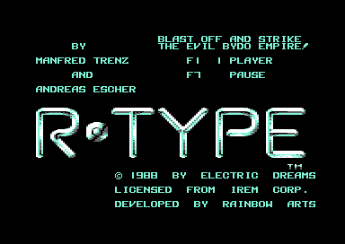
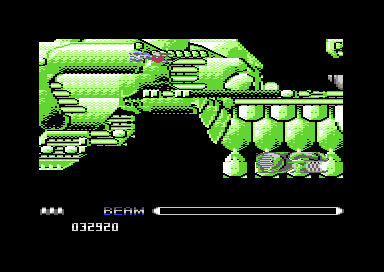

<meta charset="utf-8">
<meta name="viewport" content="width=device-width, initial-scale=1">
<title>{{title}}</title>
<link rel="preconnect" href="https://fonts.googleapis.com">
<link rel="stylesheet" href="https://fonts.googleapis.com/css2?family=Lato:wght@400;700;900&family=IBM+Plex+Mono:wght@400;500&display=swap">
<link rel="stylesheet" href="reference/r-type-page.css">
<!-- tabs -->
<header class="hero">
  <p class="eyebrow">{{platform}} · {{year}} · {{publisher}}</p>
  <h1>{{title}}</h1>
  <p class="sub">Manfred Trenz brought Irem’s arcade shooter to the Commodore 64 in a matter of weeks. Inside it sits a complete two-player game that nobody can start, because of one wrong instruction.</p>
</header>
<main class="wrap">
<section id="game" data-part="game">
  <h2 class="t">Blast off and strike the evil Bydo empire</h2>
  <p>R-Type began as an arcade game by Irem in 1987.<sup class="fn"><a href="about.html#src-5" title="Wikipedia, R-Type">5</a></sup> The player flies a lone fighter from left to right through eight stages, past the Bydo empire’s creatures and machines, to the heart of the empire itself. “Blast off and strike the evil Bydo empire!” is how the Commodore 64 title screen puts it.</p>
  <figure class="overview-shot"><figcaption>The title screen. F1 starts a game, and <a href="controls.html#keys">F7 pauses one</a>.</figcaption></figure>
  <p>Two ideas set the game apart from other shooters of its day. Holding the fire button charges a <a href="gameplay.html#beam">beam</a> that tears through everything in a line. A laser crystal brings <a href="gameplay.html#force">the Force</a>, an armoured pod that clamps to the front or the back of the ship, flies off on its own at a press of space, and fires the weapon the crystal’s <a href="gameplay.html#weapons">colour</a> chooses.</p>
  <p>The attack waves arrive at fixed points along each stage’s <a href="levels.html">map</a>. Five stages end with a <a href="gameplay.html#bosses">boss</a>, while the battleship of stage 3 and the long gauntlets of stages 6 and 7 end when the last wave is gone.</p>
  <figure class="overview-shot"><figcaption>Stage 3, the huge battleship. The whole ship is <a href="levels.html#stage-3">one map</a>, and the screen is a window that moves along and up and down it.</figcaption></figure>
</section>

<section id="makers" data-part="ending">
  <h2 class="t">The people behind the game</h2>
  <p>Electric Dreams, an Activision label, published the Commodore 64 version in 1988, on tape and on disk.<sup class="fn"><a href="about.html#src-1" title="C64-Wiki, R-Type">1</a></sup> An earlier attempt by another team had been dropped. David Jolliff and James Smart wrote its code, with graphics by Mark Jones, and Activision moved the job to Rainbow Arts in Germany.<sup class="fn"><a href="about.html#src-2" title="Games That Weren’t, R-Type V1">2</a></sup></p>
  <p>The released game’s <a href="#ending">ending</a> names the team: Manfred Trenz for the code and the game design, Andreas Escher and Trenz for the graphics, Ramiro Vaca and Chris Hülsbeck for the <a href="music.html">music and sound effects</a>, and Heureka Teachware for the fast loader. The last line of the credits reads “REALIZED IN ONLY 6 WEEKS !!!” (<code>ending_credits</code>, <code>$8373</code>). Other accounts give six and a half weeks or seven.<sup class="fn"><a href="about.html#src-1" title="C64-Wiki, R-Type">1</a></sup><sup class="fn"><a href="about.html#src-2" title="Games That Weren’t, R-Type V1">2</a></sup></p>
  <p data-part="game">Trenz had just written Katakis, a shooter so close to R-Type that Activision took action against its makers, and the conversion of R-Type went to the same programmer.<sup class="fn"><a href="about.html#src-2" title="Games That Weren’t, R-Type V1">2</a></sup> His name is written into the program four more times, in <a href="discoveries.html#credits">credits nobody sees</a>. Three of them start with a word of their own: “EVEN:”, “ALWAYS:” and “AND AGAIN:”.</p>
</section>

<section id="reception" data-part="game">
  <h2 class="t">Reviewed as a fine-looking but awkward conversion</h2>
  <p><i>Commodore User</i> reviewed the Commodore 64 version in its February 1989 issue. Tony Dillon gave it 86% for graphics, 70% for sound, 62% for lastability, and 44% for playability.<sup class="fn"><a href="about.html#src-3" title="Commodore User 65, February 1989">3</a></sup> He praised how the backdrops captured the arcade game, from “the cold metallic backdrops of the first level” onwards, and called it “not the most satisfying of conversions, especially when compared to something like Katakis. It’s addictive though. It’ll keep you coming back for a while.”</p>
  <p>One of his complaints can be read in the code. He disliked loading the first level again at the start of every game, and on this copy <code>game_over</code> (<code>$5E47</code>) ends with a cold start that loads stage 1 from the disk once more.</p>
  <p>The C64-Wiki lists two German reviews of the Commodore 64 version: 10 out of 12 in <i>ASM</i> (December 1988) and 82% in <i>Power Play</i> (February 1989).<sup class="fn"><a href="about.html#src-1" title="C64-Wiki, R-Type">1</a></sup></p>
</section>

<section id="ending" data-part="ending">
  <h2 class="t">An ending in the ninth load</h2>
  <p>After stage 8 the loader fetches one more file, Y, and runs it (<code>ending_start</code>, <code>$8000</code>). The text scrolls up the screen over a field of stars: “THANKS TO YOUR BRAVE FIGHTING THE COSMOS RESTORED PEACE. THE MACHINE EMPIRE WAS ANNIHILATED…”, then “STAFF OF IREM” and the credits above. A press of space then wipes the whole of memory and resets the machine (<code>ending_reset</code>, <code>$80BE</code>).</p>
  <p>The ending file brings its own copy of the music driver and three tunes, of which it plays one. The <a href="music.html#ending-tunes">Music tab</a> plays all three.</p>
</section>

<section id="explore" data-part="game">
  <h2 class="t">What hides inside</h2>
  <p>The program keeps a complete two-player game that the title screen never lets anyone start, a <a href="discoveries.html#upside-down">space station drawn half upside down</a>, and a last stage that still carries large pieces of the stage before it. The <a href="discoveries.html">Discoveries tab</a> has these and more.</p>
  <p class="overview-links"><a href="levels.html">See all eight stages’ maps</a><a href="graphics.html">Every sprite shape</a><a href="music.html">Hear all 35 tunes</a></p>
</section>
</main>
<footer style="margin:16px 0 0;padding:22px var(--gx) 0;border-top:1px solid #e0ded8;font-family:'IBM Plex Mono',ui-monospace,Menlo,monospace;font-size:12px;color:#80838a"><a href="https://github.com/gamesexplained/gamesexplained" aria-label="GitHub" style="display:inline-flex;align-items:center;justify-content:center;width:26px;height:26px;margin-left:8px;border:1px solid #e0ded8;border-radius:7px;background:#ffffff;color:#80838a;vertical-align:middle"><svg width="15" height="15" viewBox="0 0 24 24" fill="currentColor" aria-hidden="true"><path d="M12 .297c-6.63 0-12 5.373-12 12 0 5.303 3.438 9.8 8.205 11.385.6.113.82-.258.82-.577 0-.285-.01-1.04-.015-2.04-3.338.724-4.042-1.61-4.042-1.61C4.422 18.07 3.633 17.7 3.633 17.7c-1.087-.744.084-.729.084-.729 1.205.084 1.838 1.236 1.838 1.236 1.07 1.835 2.809 1.305 3.495.998.108-.776.417-1.305.76-1.605-2.665-.3-5.466-1.332-5.466-5.93 0-1.31.465-2.38 1.235-3.22-.135-.303-.54-1.523.105-3.176 0 0 1.005-.322 3.3 1.23.96-.267 1.98-.399 3-.405 1.02.006 2.04.138 3 .405 2.28-1.552 3.285-1.23 3.285-1.23.645 1.653.24 2.873.12 3.176.765.84 1.23 1.91 1.23 3.22 0 4.61-2.805 5.625-5.475 5.92.42.36.81 1.096.81 2.22 0 1.606-.015 2.896-.015 3.286 0 .315.21.69.825.57C20.565 22.092 24 17.592 24 12.297c0-6.627-5.373-12-12-12"/></svg></a><a href="https://discord.gg/3V9GWyRDWV" aria-label="Discord" style="display:inline-flex;align-items:center;justify-content:center;width:26px;height:26px;margin-left:8px;border:1px solid #e0ded8;border-radius:7px;background:#ffffff;color:#80838a;vertical-align:middle"><svg width="15" height="15" viewBox="0 0 24 24" fill="currentColor" aria-hidden="true"><path d="M20.317 4.3698a19.7913 19.7913 0 00-4.8851-1.5152.0741.0741 0 00-.0785.0371c-.211.3753-.4447.8648-.6083 1.2495-1.8447-.2762-3.68-.2762-5.4868 0-.1636-.3933-.4058-.8742-.6177-1.2495a.077.077 0 00-.0785-.037 19.7363 19.7363 0 00-4.8852 1.515.0699.0699 0 00-.0321.0277C.5334 9.0458-.319 13.5799.0992 18.0578a.0824.0824 0 00.0312.0561c2.0528 1.5076 4.0413 2.4228 5.9929 3.0294a.0777.0777 0 00.0842-.0276c.4616-.6304.8731-1.2952 1.226-1.9942a.076.076 0 00-.0416-.1057c-.6528-.2476-1.2743-.5495-1.8722-.8923a.077.077 0 01-.0076-.1277c.1258-.0943.2517-.1923.3718-.2914a.0743.0743 0 01.0776-.0105c3.9278 1.7933 8.18 1.7933 12.0614 0a.0739.0739 0 01.0785.0095c.1202.099.246.1981.3728.2924a.077.077 0 01-.0066.1276 12.2986 12.2986 0 01-1.873.8914.0766.0766 0 00-.0407.1067c.3604.698.7719 1.3628 1.225 1.9932a.076.076 0 00.0842.0286c1.961-.6067 3.9495-1.5219 6.0023-3.0294a.077.077 0 00.0313-.0552c.5004-5.177-.8382-9.6739-3.5485-13.6604a.061.061 0 00-.0312-.0286zM8.02 15.3312c-1.1825 0-2.1569-1.0857-2.1569-2.419 0-1.3332.9555-2.4189 2.157-2.4189 1.2108 0 2.1757 1.0952 2.1568 2.419 0 1.3332-.9555 2.4189-2.1569 2.4189zm7.9748 0c-1.1825 0-2.1569-1.0857-2.1569-2.419 0-1.3332.9554-2.4189 2.1569-2.4189 1.2108 0 2.1757 1.0952 2.1568 2.419 0 1.3332-.946 2.4189-2.1568 2.4189Z"/></svg></a><br>© Games Explained contributors. Write-ups, facts and symbol maps are available under <a href="https://creativecommons.org/licenses/by-sa/4.0/" style="color:#1f5fa8;text-decoration:none">CC BY-SA 4.0</a>; code under <a href="https://opensource.org/licenses/MIT" style="color:#1f5fa8;text-decoration:none">MIT</a></footer>
